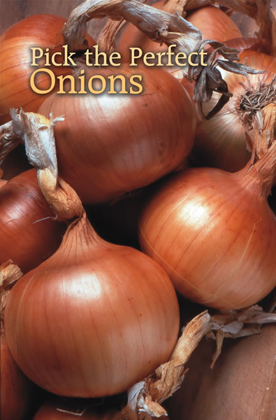
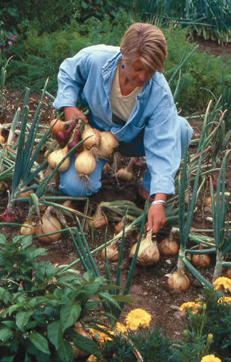
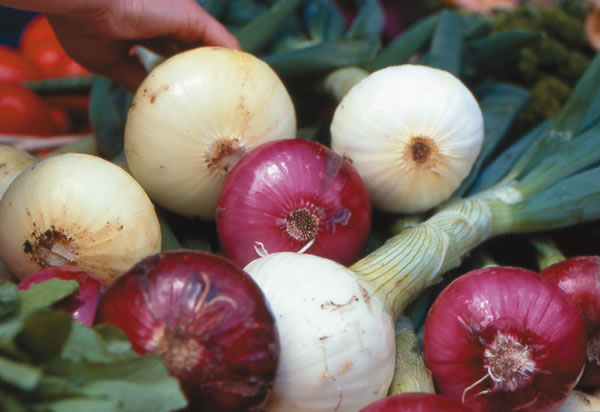
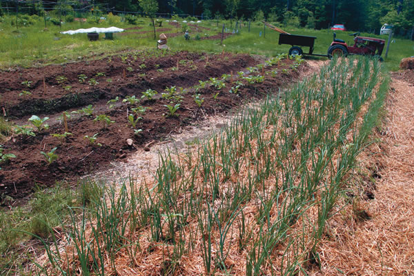
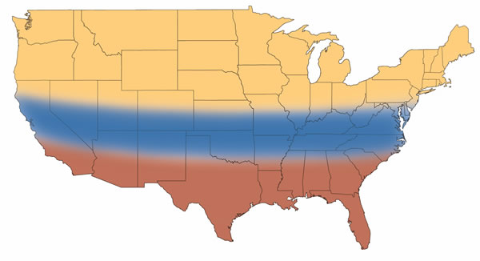
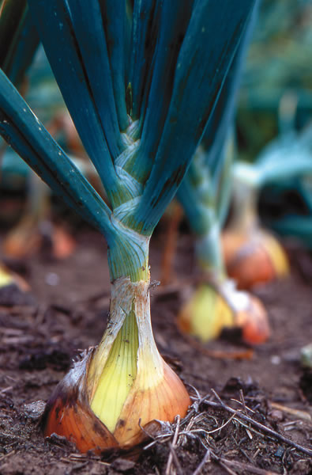
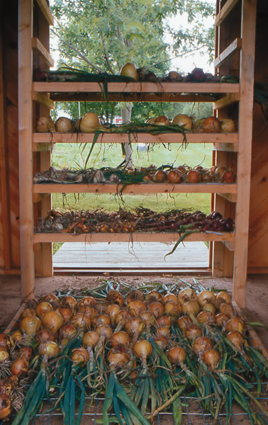
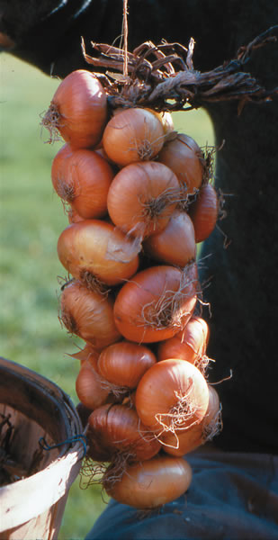
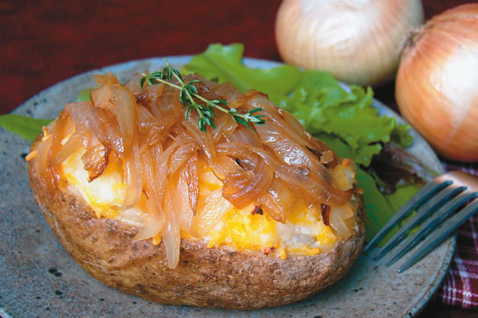

Onions occupy an important place in the culinary world due to their wide variety and versatility. Sweet and mild onions can be enjoyed raw in salads or lightly cooked in summer salsas and stir-fries, while pungent varieties add body and flavor to meats, marinaras and winter soups. If bulb onions arent near the top of your shopping or garden-planting list, they should be. Many varieties of onions make excellent storage crops, so put onions in your garden and reap a harvest of beautiful bulbs that will enliven your kitchen in any season.
There are no bad onions; you just have to use them correctly, says Bill Randle, a professor of horticulture at the University of Georgia who specializes in onion flavor. The pungency of onions can be rated on a numeric scale based on the amount of pyruvic acid present in the bulbs. For example, Yellow Granex the type of onion often called a Vidaliais among the mildest onions and might rate between 1 and 4, while many other sweet onion varieties such as the Texas Super Sweet have ratings between 3 and 5. Storage onions, often called dry onions, contain more pyruvic acid and often rate between 7 and 12.
Many storage onions are delicious when cooked, but almost inedible when raw. Most people cant hold a raw 8 in their mouth, Randle says.But when Im making chili, thats what I want. Cooking spicy storage onions not only adds flavor to food, but can make the onions quite sweet.
Onions are complex chemical powerhouses, but their fury is not unleashed until they are cut. As soon as the cells are opened, a cascade of eye-irritating sulfur compounds hits the air. Cooks have many methods for taking the tears out of chopping onions, but according to Randle, the best idea is to chill the onion first. The irritating compounds volatize at 50 degrees, so if the onion temperature is lower than that, it wont make you cry, he says. The chefs trick of leaving the base of the onion intact can help, too, because pungency compounds are most concentrated in the base and center of the bulb.
Want to turn up the volume of onion flavor? Finely chopping onions increases the number of open cells, which delivers more flavor to cooked foods than leaving onions in larger pieces.
When chopped onions are left to sit, their flavor compounds continue to change and rearrange themselves, which can lead to bitter off-flavors. Cut or chop onions as close to the time you plan to use them as you can, Randle says.
Heres another reason to eat onions: The same sulfur compounds that can make you cry when chopping onions are good for your heart. Onions act as a natural blood thinner that can reduce your risk of heart attack and stroke.
Cooking breaks down the heart-healthy sulfur compounds, so the solution is to find heartburn-free ways to consume raw onions. While mild onions have fewer of these health-enhancing compounds than pungent onions, they can be a better choice for heart health because people are more likely to eat them raw. I call it the pungency paradox, says Irwin Goldman, a professor of horticulture at the University of Wisconsin.
Goldman suggests two additional ways to enjoy raw onions: onion sprouts, which are eaten like bean sprouts; and onion flowers. Onions kick on their defensive machinery early, so the compounds are quite concentrated in sprouts. They have a wonderful, sharp flavor when added to salads or sandwiches. Onion flowers have higher levels of medicinal compounds than the bulbs, and they taste fabulous when used in place of raw, chopped onions.
Each ring in an onion bulb is the swollen base of an aboveground leaf, so onion plants that have many big leaves when they form bulbs will produce the best and biggest onions. That means that providing onions with a long, stress-free growing season is the key to growing robust bulbs. Youll get the best crop by fitting your climate with onion maturation, which gives the plants longer to grow before they bulb, says Chris Cramer, head of the onion breeding program at New Mexico State University.
Onions are adapted for different day lengths. Above is an approximate guide to where each type of onion grows best.
Onions are extremely sensitive to day length, which signals them to begin bulbing. Because of this, you should look for onion varieties that are adapted not only for your climate, but also to your specific latitude, which is directly related to the hours of daylight your garden receives. Choosing a variety adapted for far north or far south of where you live often means that the onions you plant wont form bulbs at all.
In general, there are three different onion types:
Short-day onions wait until days last 10 to 12 hours to begin forming bulbs. They are the best choices in the South where onions can be grown through winter or planted in early spring. Short-day onions that mature before hot weather begins often taste sweet, and many of the sweetest onions are short-day varieties. Most short-day varieties also are juicy and store well for only a few weeks, even when refrigerated. Popular varieties include Texas 1015 and Granex hybrids.
Intermediate-day onions start bulbing when days last 12 to 14 hours and usually do well in the middle of the United States. These onions are dense and pungent, and store better than short-day onions. Some intermediate-day varieties, such as Super Star and Candy, can mature into moderately sweet onions under perfect conditions, but most of these onions are pungent. Most are hybrids developed from a combination of short-day and long-day varieties.
Long-day onions require 14- to 16-hour days to begin forming bulbs, so they grow best in Northern regions, where there are many hours of daylight during the summer months. Long-day onions are usually dense and pungent with thick, papery skins that protect them from moisture loss, so they often store well for many months. Most long-day onions sold as plants are hybrids, but if youre starting from seed you can grow outstanding open-pollinated varieties such as New York Early or elongated Red Tropea.
Gardeners growing bulb onions have to choose among planting with seed, sets or seedlings. Onion sets are small bulbs stored from the previous years crop; seedlings are young onion plants that havent yet formed bulbs.
Starting from seed is inexpensive, but is the most challenging option. Properly stored fresh onion seed germinates well at 60 to 75 degrees, but if heavy rains cause a crust of soil to form over the seeds after they are planted, then emergence rates can be low. Onions compete poorly with weeds. When starting from seed, hand weeding is especially important to keep the skinny, upright plants from being smothered by pushy neighbors. Newly sprouted seedlings also need time to grow before bulbing, so starting from seed is most practical in the mild winters of Zones 8 and 9, where onions can be seeded in fall and grown through winter.
Both sets and seedlings are easy to handle, but fewer choices are available for sets. Starting with either gives onions a six-week head start and avoids one of the main pitfalls of growing onions: bolting, which is what happens when onions form flowers. Bolted onions do form bulbs, although they are small and dont store well. Some varieties are naturally bolt-resistant, but exposure to cold weather can trigger a flowering response in any onion variety. Be sure to wait until at least six weeks before your last spring frost to plant sets or seedlings. Even then, a late cold snap can cause your largest plants to bolt.
To help manage weeds, you can use corn gluten herbicides when growing onions from sets or seed-lings. (Dont use corn gluten if youre planting onion seeds because it will kill them.) In addition to slowing weed emergence, corn gluten herbicide raked into the planting row or bed provides a good dose of nitrogen as it decomposes. Another option is hand weeding, followed with a light mulch in late spring.
Bruce Onion Man Frasier, co-owner of Dixondale Farms in Texas, which produces 420 million onion seedlings each year, says the ideal planting size is an onion slightly smaller than a pencil. Plants that are much larger have a tendency to bolt, he says. Smaller plants will produce bulbs, but you can get two crops by planting the small ones 2 inches apart and pulling every other onion to use as scallions during the growing season. This will leave you with the 4-inch spacing you need to grow big bulbs.
The best soil for onions is fertile sandy loam, but any kind of soil that is rich enough to grow tomatoes is good enough for onions. Rotating your crops from year to year is the best way to prevent onion diseases such as pink root and others caused by soilborne fungi. Rotating also can help you escape problems with insect pests such as onion root maggots. Where this pest is widespread, the best defense is to start your crop beneath row covers.
If you prefer onions with sweet and mild flavors, several techniques can help lower the pungency of your onions. If you need to enrich your garden soil, one possibility is to mix an organic fertilizer into the soil beneath the planting row, rather than broadcasting it throughout the bed. This technique, called banding, has two advantages: The shallow onion roots are sure to find the fertilizer and will probably use up most of it by the time bulbing begins. Randle notes that onions that exhaust soilborne nutrients as they approach maturity yet still receive ample water often have a mild flavor because their ability to make sulfur compounds decreases as nutrient levels fall.
If sweet onions are your goal, a steady water supply also is important because stress from short-term drought causes onions to accumulate more of the compounds that cause pungency. Its best to use watering methods that keep the leaves dry, such as drip lines or soaker hoses. Overhead watering encourages fungal diseases, which limit the leaves ability to store carbohydrates for bulb formation, Frasier says.
Once onion bulbs begin to form, ample watering can help dilute the flavor compounds in the onions, resulting in a milder taste. The story changes as onion tops fall over, signaling maturity. Mature onions will store best if the bulbs are allowed to dry out during their last days in the ground. If rainy weather hits just as the tops fall over, its best to pull up the bulbs and move them to cure in a warm, dry place. Take care to avoid bruising, which can lead to rotten spots, and either hang the bulbs or spread them out on newspapers to dry. In only four days or so at 85 degrees (or a few days longer at room temperature), the necks should tighten and close as the outer layers form papery scales. Cured sweet onions are so packed with water that they should be stored in the refrigerator. Harder, pungent onions can be kept in a cool, dry place with good air circulation between the bulbs.
Contributing Editor Barbara Pleasant always has some type of onion growing in her North Carolina garden.
|
 LYNN KARLIN Harvesting a bumper crop of onions in a Maine garden. |
 RICK WETHERBEE Red and white onion bulbs. |
 SCOTT VLAUN Onions mulched to suppress weeds. |
|
 DAVID CAVAGNARO Onions are adapted for different day lengths. Above is an approximate guide to where each type of onion grows best. |
 LYNN KARLIN ‘Ailsa Craig’ onions are a sweet variety. |
 BARBARA PLEASANT These onions are being prepared for storage. |
|
 Onions can be braided just like garlic. |
 |
 |